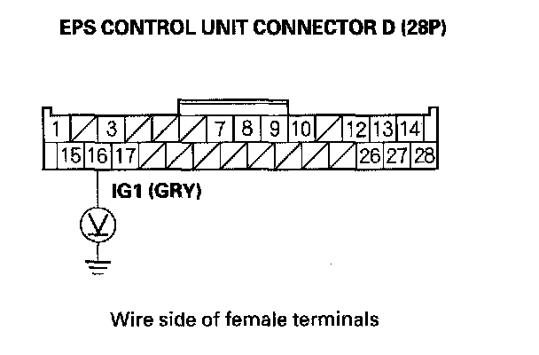

DTC 11-01
DTC 11-01: Low/High IG1-terminal Voltage (Initial diagnosis)1. Clear the DTC with the HDS.
2. Turn the ignition switch OFF.
3. Start the engine.
4. Wait at least 60 seconds.
Does the EPS indicator come on?
YES - Go to step 5.
NO - Check for loose wires or poor connections. If the connections are good, the system is OK at this time.
5. Turn the ignition switch OFF.
6. Disconnect EPS control connector D (28P).
7. Turn the ignition switch ON (II).
8. Wait at least 60 seconds.
9. Measure voltage between EPS control unit connector D (28P) terminal No. 16 and body ground.

Is the voltage between 9.63 - 16.6 V?
YES - Check for loose terminals in the EPS control unit connectors and repair if necessary. If no poor connections are found, replace the EPS control unit.
NO - If there is no voltage, or the voltage is lower than specified, repair an open or high resistance in the wire between the No. 4 (7.5 A) fuse in the under-dash fuse/relay box and EPS control unit. If the wire checks OK, check the battery, and troubleshoot the alternator regulator circuit.